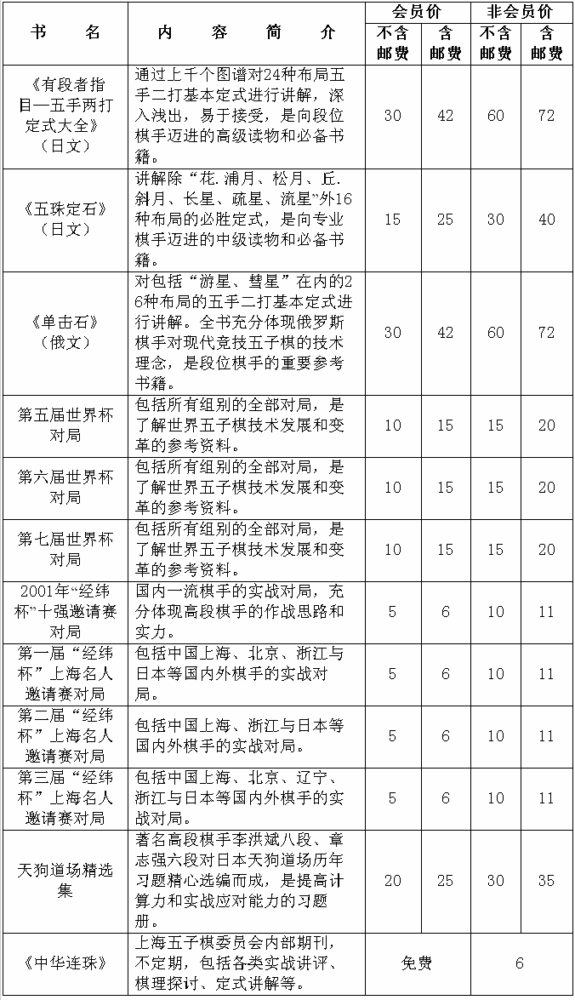

上海五子棋（内部）资料一览表
首页
五子商城
#1 上海五子棋（内部）资料一览表 作者：有志青年 发表时间：2007-8-9 13:50:06
源信息地址：http://www.shwzq.com/ziliao/ShowSoft.asp?SoftID=5
有需要购阅以上资料者，请联系：hmc68@tom.com
（资料由上海五子棋委员会提供）

#2 Re:上海五子棋（内部）资料一览表 作者：gerbo 发表时间：2007-8-9 14:40:49
是否有工作人员的QQ,请发布下~
#3 Re:上海五子棋（内部）资料一览表 作者：daiyue 发表时间：2007-8-9 16:16:24
嗯……
#4 Re:上海五子棋（内部）资料一览表 作者：小丸.net 发表时间：2007-8-9 17:41:34
我要对局谱、我要天狗、我要世界杯谱。。。。。我要。。。
#5 Re:上海五子棋（内部）资料一览表 作者：黄药师 发表时间：2007-8-9 18:48:22
我就要地毯谱！
#6 Re:上海五子棋（内部）资料一览表 作者：daiyue 发表时间：2007-8-10 12:23:30
提供几个购买的链接：
天狗道场：http://auction1.taobao.com/auction/0/item_detail-0db2-8c2b1f61f634cb0fc007aefdeaed4e55.jhtml
五珠定石：http://auction1.taobao.com/auction/0/item_detail-0db2-f028e08845e5015218764c2dba149c09.jhtml?from_shop=true
五手两打：http://auction1.taobao.com/auction/0/item_detail-0db2-4712c1c518607563d5324d8bf35bfac1.jhtml?from_shop=true
连珠世界：http://auction1.taobao.com/auction/33-50004870-50005169-50004891/item_detail-0db2-e5c2d4be7e3d4c56029b6d1bf160e353.jhtml
三手胜五子棋题解：http://auction1.taobao.com/auction/33-3334-50003141/item_detail-0db2-c35b0c972dee970a08fcdbe292676974.jhtml
五子棋选点诀窍：http://auction1.taobao.com/auction/33-3334-50003141/item_detail-0db2-55e63a3e4ca4f0e233672565d6806626.jhtml
#7 Re:上海五子棋（内部）资料一览表 作者：gerbo 发表时间：2007-10-8 20:34:52
天狗道场,是否有答案提示?
#8 Re:上海五子棋（内部）资料一览表 作者：daiyue 发表时间：2007-10-15 22:18:29
无。
#9 Re:上海五子棋（内部）资料一览表 作者：行云流水 发表时间：2007-10-16 9:00:27
需要相关资料的朋友可以发电子邮件到hmc68@tom.com，这是我会负责资料工作的黄民城老师的信箱，相关情况他会解答和回复。
#10 Re:上海五子棋（内部）资料一览表 作者：gerbo 发表时间：2007-10-16 22:40:30
章志强老师的书籍马上就可以到这了,还有他的签名,好高兴啊~~
#11 Re:上海五子棋（内部）资料一览表 作者：gerbo 发表时间：2007-11-18 23:58:36
 不错，有签名，祝棋艺日进 嘿嘿，现在下棋的时候很少，以后有时间了再仔细看看，争取以后拿个段位回来~
不错，有签名，祝棋艺日进 嘿嘿，现在下棋的时候很少，以后有时间了再仔细看看，争取以后拿个段位回来~
#12 Re:上海五子棋（内部）资料一览表 作者：五子天下 发表时间：2008-2-18 20:06:10
我也想买
#13 Re:上海五子棋（内部）资料一览表 作者：百医天使 发表时间：2008-4-26 16:49:25
网上的电子书不是很多吗,是不是不全?
#14 Re:上海五子棋（内部）资料一览表 作者：晏如庐 发表时间：2008-6-27 11:38:50
如能提供联系人地址\邮编\银行账号\联系电话等信息,则方便购买,未知可否?
#15 Re:上海五子棋（内部）资料一览表 作者：晏如庐 发表时间：2008-7-1 9:22:01
是的,谢谢!
#16 Re:上海五子棋（内部）资料一览表 作者：越狱行辕 发表时间：2008-7-4 12:02:09
真够昂贵了
#17 Re:上海五子棋（内部）资料一览表 作者：武进长老 发表时间：2008-7-6 17:35:26
贵了才会知道珍惜。
李洪斌、章志强两位老师耗巨资集数年心血收集整理编撰的〈天狗道场〉现在在网上却被一群宵小们肆意践踏。
#18 Re:上海五子棋（内部）资料一览表 作者：幻 发表时间：2008-7-8 7:57:48
连珠世界：http://auction1.taobao.com/auction/33-50004870-50005169-50004891/item_detail-0db2-e5c2d4be7e3d4c56029b6d1bf160e353.jhtml
这个看不见的，被转移了
#19 Re:Re:上海五子棋（内部）资料一览表 作者：yoda 发表时间：2008-7-8 9:01:30
引用：
原文由 幻 发表于 2008-7-8 7:57:48 :
连珠世界：http://auction1.taobao.com/auction/33-50004870-50005169-50004891/item_detail-0db2-e5c2d4be7e3d4c56029b6d1bf160e353.jhtml
这个看不见的，被转移了
连珠世界：http://auction1.paipai.com/D10E140600000000005135BE014CF11A?PTAG=10.2.6［ 有志青年 于 2008-7-8 9:03:56 时奖励此帖[金币加 20 威望加1］
#20 Re:上海五子棋（内部）资料一览表 作者：爱下不下 发表时间：2009-3-9 9:09:40
1、上海五子棋委员会提供的资料除了上述列表中的前三种，外加《珠世界》（日文）2006年全年和李洪斌《松月大全》，其它资料目前均无；
2、6楼提供的购买信息均已不存在了。
3、《三手胜五子棋题解》等书国内有正式出版，可在当当网购买，正版且打折，现正做活动免邮费。
［ 有志青年 于 2009-3-9 11:19:14 时奖励此帖[金币加 20 威望加1］
#21 Re:Re:上海五子棋（内部）资料一览表 作者：超级菜鸟徒弟 发表时间：2009-3-9 14:38:48
是这种提示：“很抱歉！您要查看的宝贝可能已经被转移”
#22 Re:上海五子棋（内部）资料一览表 作者：刀魂 发表时间：2009-3-9 15:41:47
hehe 好东西
#23 Re:上海五子棋（内部）资料一览表 作者：wrwak 发表时间：2009-3-11 22:00:37
现在这些东西网上蛮多可以找到
#24 Re:上海五子棋（内部）资料一览表 作者：借力打力博柔派 发表时间：2009-3-15 11:22:02
看起来 好东西 全是日文的。
#25 Re:上海五子棋（内部）资料一览表 作者：刀魂 发表时间：2009-3-15 11:25:16
 ，好东西，哪里可以搞到 电子版本的
，好东西，哪里可以搞到 电子版本的
#26 Re:上海五子棋（内部）资料一览表 作者：爱下不下 发表时间：2009-3-16 13:35:26
上海五子棋委员会目前提供的资料:
<单击石>（俄文）-72元
<五手两打总论>(日文)-72元
<五珠定石>(日文)-40元
<李洪斌松月定式大全>-72元
<日本连珠世界>(日文月刊)06年全年-120元
注:
1.以上资料为复印件装订本.
2.资料价格含邮资.
3.单本资料以挂号件方式邮寄.
4.两本以上以邮政快递方式邮
联系人：黄民城 手机：13524491481
电子邮箱：hmc68@tom.com
#27 Re:上海五子棋（内部）资料一览表 作者：潇洒 发表时间：2009-3-16 19:25:15
楼上难道是黄民城老师
#28 Re:上海五子棋（内部）资料一览表 作者：爱下不下 发表时间：2009-3-17 10:47:50
不是，但是在黄老师那里买过资料
#29 Re:上海五子棋（内部）资料一览表 作者：潇洒 发表时间：2009-3-17 11:43:50
哦 呵呵
#30 Re:上海五子棋（内部）资料一览表 作者：越狱行辕 发表时间：2009-6-27 6:11:23
我能问下 我 单击石是复印的吧？为什么这么贵
#31 Re:上海五子棋（内部）资料一览表 作者：极地剑客 发表时间：2009-8-17 16:09:38
还有啥新书没~偶喜欢收集哈~
#32 Re:上海五子棋（内部）资料一览表 作者：千羽鹤 发表时间：2009-8-20 4:51:34
不知道有没有中文版的哦。。
#33 Re:上海五子棋（内部）资料一览表 作者：刀魂 发表时间：2009-8-20 8:05:10
不用买，网上都有，其实没有什么 内部不内部的，呵呵。。。自己研究就可以啦
#34 Re:上海五子棋（内部）资料一览表 作者：千羽鹤 发表时间：2009-8-21 0:22:37
拿来收藏一下。。。。。
#35 Re:上海五子棋（内部）资料一览表 作者：索非亚 发表时间：2009-10-5 19:24:43
 《连珠世界》现在有多少期？从哪年哪期到现在的？
《连珠世界》现在有多少期？从哪年哪期到现在的？
外国除日本外是否也出版（正式，内部）五子期刊？听说ANDO也要出书，是否已经出版。。。。。。
#36 Re:上海五子棋（内部）资料一览表 作者：不再捣乱 发表时间：2009-11-17 16:00:35
我想要单击石
#37 Re:上海五子棋（内部）资料一览表 作者：极地剑客 发表时间：2010-10-8 10:45:31
有无日本名人战挑战手合修正那本书哦~
#38 Re:上海五子棋（内部）资料一览表 作者：猪无戒 发表时间：2011-3-22 17:27:28
书是好,但购买实在是不方便啊!
#39 Re:上海五子棋（内部）资料一览表 作者：猪无戒 发表时间：2011-3-22 17:29:31
书好是好,但购买不方便啊!
#40 Re:上海五子棋（内部）资料一览表 作者：猪无戒 发表时间：2011-3-22 17:50:31
书好是好,但购买不方便啊!
#41 Re:上海五子棋（内部）资料一览表 作者：猪无戒 发表时间：2011-8-9 9:47:04
中国五子棋界何时能出中文版的《五手两打》啊？！？？？？？！！